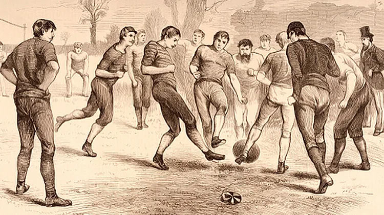

Футбол (або соккер, як гра називається в деяких частинах світу) - один з найпопулярніших видів спорту в Європі та Америці. У нього яскрава і цікава історія в світі спорту. Футбол в його нинішньому вигляді виник в Англії в середині 19 століття. Але альтернативні версії гри існували набагато раніше і є частиною футбольної історії.
Ранні свідчення того, що в футбол грають як в спортивну гру, зустрічаються у Китаї в 2 і 3 століттях до нашої ери. У Китаї, а конкретніше за часів династії Хань, люди змащували шкіряні кульки і штовхали їх в маленьку сітку. Записані свідчення також підтверджують той факт, що стародавні римляни і греки грали в м'яч заради веселощів і жартів. Деякі відомості вказують на Кіото в Японії, де удар по м'ячу був популярним видом спорту.
Вважається, що раннє зростання сучасного футболу почалося в Англії. У деяких кумедних фактах навіть згадується, що перший використаний м'яч був головою якогось датського розбійника. Кажуть, що у часи середньовіччя рання форма футболу дозволяла здійснювати членоушкодження, такі як удари ногами і руками, укуси і штурхання. Основне завдання полягало в тому, щоб перенести м'яч в цільову точку. Люди настільки полюбили цю гру, що весь день збиралися на полі. Іноді конкуренція ставала все більш запеклою, і натовп ставав настільки диким, що під час гри досить часто траплялися випадки побоїв. Є свідчення, що солдати так захопилися грою, що пропустили практику стрільби з лука, щоб побачити її.
Король Едуард III заборонив футбол в 1365 через зростаючі інциденти насильства і військової поблажливості в спорті. В 1424 році король Шотландії Яків I також проголосив в парламенті- "Na man play at the Fute-ball" (ніхто не повинен грати у футбол).
Коли і де саме зародився футбол - це питання, на яке немає точної відповіді. Ви можете легко сказати, що в цю популярну гру грають вже більше трьох тисяч років. Народження сучасного футболу приписано Великобританії. Він також був відомий як футбольна асоціація, а Шотландія та Англія були співзасновниками регулярної гри в футбол.
News
Все могло бути інакше. Та не сьогодні. ;) !!!!